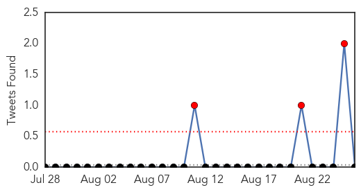
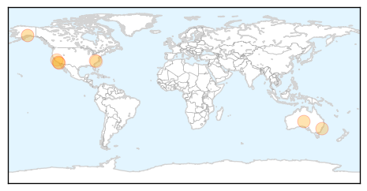

30 Day Trends
Web: 0 alerts, 0 warnings
Twitter: 3 alerts, 0 warnings
Top Articles:
- 0.997
- To flu or not to flu
- 0.958
- Pharmacists Play Key Role in Preventing Flu Pandemic
- 0.930
- IBTimes Newsletters
- 0.929
- Researchers inch closer to a universal flu vaccine
- 0.887
- Influenza vaccine also prevents heart attacks, UNSW study finds
- 0.843
- Early Fall Is Best Time to Get Flu Shot
- 0.751
- August 25, 2015 Archives
- 0.751
- August 25, 2015 Archives
- 0.547
- Health Department to give flu shots
Top Tweets:
-
No tweets found for Aug 26, 2015
Web/News Articles

Tweets
Article Locations
Article Confidences